Primeros pasos
Antes de empezar
La app registra la revisión de cada cuarto: lo que está mal, con foto, y el seguimiento hasta que queda reparado. Busca tu puesto en el índice; esta parte y la de ayuda sirven para todos.
Qué hace cada puesto
| Puesto | Qué hace en la app | Barra de abajo |
|---|---|---|
| Ama de llaves | Al terminar de limpiar, revisa el cuarto con sus 29 puntos y lo envía al gerente. | Cuartos · Folios · Perfil |
| Gerente | Revisa los cuartos con sus 25 puntos, decide si se pueden rentar y lleva cada folio hasta cerrarlo. | Cuartos · Folios · Reportes · Perfil |
| Propietarios | Ven las seis sucursales, los folios y los indicadores. Solo consultan. | Panel · Folios · Reportes · Perfil |
| Administración | Da de alta cuartos, equipo y personal, y fija las reglas de cada sucursal. | Panel · Folios · Reportes · Ajustes · Perfil |
El gerente y la ama de llaves solo ven su sucursal. Propietarios y administración ven las seis.
Palabras que vas a ver
| Palabra | Qué significa |
|---|---|
| Checklist | La lista de puntos que se revisan en un cuarto. La del gerente tiene 25, la de ama de llaves 29, más el equipo que tenga ese cuarto. |
| «Mal» o falla | Un punto que no está bien. Siempre lleva qué pasa y, de preferencia, una foto. |
| Folio | El seguimiento de una falla, con su número: PIC-LER-000008 es el folio 8 de Lerma. Nace solo al marcar algo mal. |
| Renta | La decisión del gerente de si un cuarto puede rentarse o no, con su motivo. |
| Chequeo | Cada revisión terminada. La app guarda quién la hizo y a qué hora. |
Entrar
- Abre en el celular la dirección que te dé la administración: en Android con Chrome, en iPhone con Safari.
- Escribe tu correo y tu contraseña. El botón Ver enseña lo que escribiste, para revisar que esté bien.
- Toca Entrar. Llegas directo a tu inicio.
- La sesión se queda abierta: la próxima vez entras sin escribir nada. Si pasan 30 días sin abrir la app, te la vuelve a pedir.
¿Olvidaste tu contraseña? Pídela a la administración: la app todavía no la recupera sola. Si te sale un mensaje en rojo, ve a No me deja entrar.
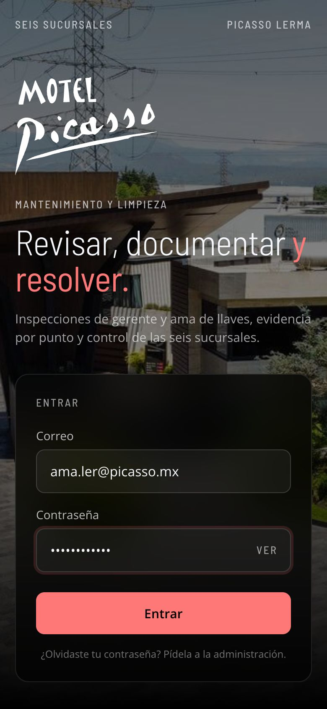
Instalarla como app
No se baja de ninguna tienda: se instala desde el navegador y queda con su ícono en la pantalla de inicio. Abre sin la barra del navegador, como cualquier app.
En iPhone (Safari)
- Con la app abierta, toca el botón Compartir (el cuadro con la flecha hacia arriba).
- Elige «Agregar a inicio» y luego Agregar.
En Android (Chrome)
- Toca el menú ⋮ de arriba a la derecha.
- Elige «Instalar app» o «Agregar a la pantalla principal». A veces la app misma muestra el botón Instalar Picasso en Perfil.
En Perfil → Instalar en el teléfono la app te recuerda cómo hacerlo en tu celular, o te dice «Ya la estás usando como app».
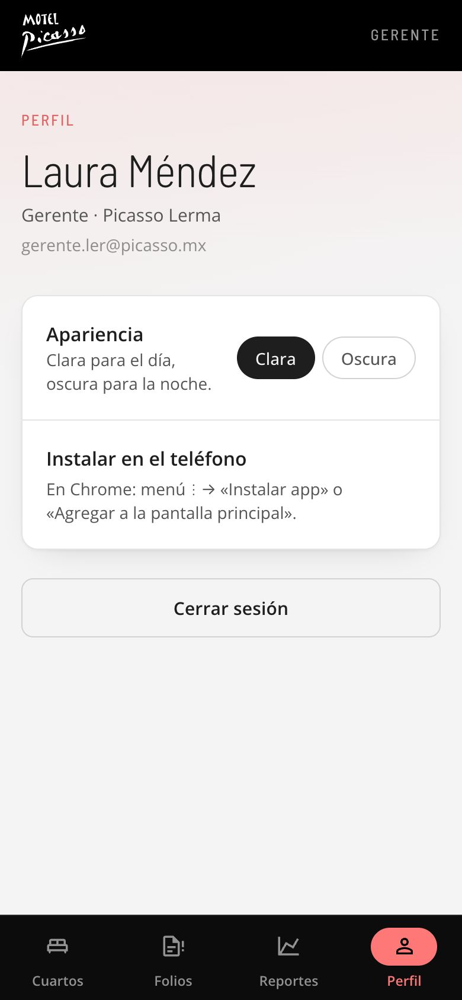
Moverte por la app y salir
- Abajo está la barra de navegación, con el nombre de cada pantalla. La que tienes abierta se marca en coral.
- Arriba a la derecha dice tu puesto. Arriba a la izquierda, el logo te regresa a tu inicio.
- En Perfil ves tu nombre, tu sucursal y tu correo; eliges apariencia Clara u Oscura, y cierras sesión con Cerrar sesión. Si el celular lo usan varias personas, ciérrala al terminar tu turno.
Gerente
Tu día como gerente
Revisas los cuartos de tu sucursal, decides si se pueden rentar y llevas cada folio hasta cerrarlo con foto de la reparación. La app te dice qué sigue.
Tu inicio y «Tu siguiente paso»
Arriba está tu sucursal con tres números: cuartos por revisar hoy, folios abiertos y cuartos sin rentar.
Debajo, «Tu siguiente paso» te dice lo más urgente, con un botón para ir directo. Sale en este orden:
- Un cuarto que dejaste a medias: «Tienes el 101 a medias». Lo que marcaste ya está guardado.
- Cuartos que la ama de llaves te envió: revísalos tú.
- Folios nuevos sin atender: decide la renta y pon quién lo atiende.
- Cuartos que te faltan por revisar hoy.
- Si no hay nada: «Todo al día».
Más abajo, Folios abiertos se desliza de lado; «Ver todos» abre la lista completa.
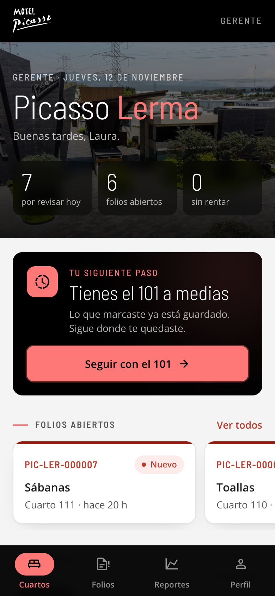
Tus cuartos y su estado
Cada tarjeta trae el número del cuarto, su estado, sus áreas especiales (o «Sencilla»), parte de su equipo y la hora del último chequeo con quién lo hizo y cuántas cosas salieron mal.
Los botones de arriba filtran: Todos, Por revisar, A medias, Con folio y No rentar. Actualizar vuelve a cargar la lista.
| Estado | Qué quiere decir |
|---|---|
| Por revisar hoy | Te toca revisarlo hoy. |
| Enviado por ama | La ama de llaves ya lo revisó y te lo pasó. |
| Empezaste su checklist y no lo terminaste. | |
| Con folio | Tiene al menos un folio abierto. |
| No rentar | Tu decisión vigente es que no puede rentarse. |
| Al día | Sin pendientes. |
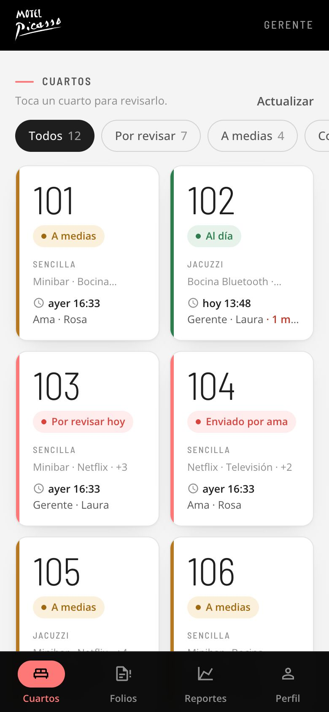
Revisar un cuarto
- Toca el cuarto. Sube una hoja con su último chequeo, la última revisión de la ama de llaves, la tuya, la renta vigente y lo que tiene el cuarto.
- Toca Revisar el cuarto 103. Si ya lo tenías a medias, la app te lleva directo a donde te quedaste.
- Arriba ves el último chequeo de ese cuarto. Debajo, los puntos agrupados: acceso y seguridad, agua y baño, electricidad y clima, habitación, entretenimiento y servicio, áreas especiales, cochera, revisión final y el equipo del cuarto.
- Toca solo lo que está mal. Lo que no toques queda bien al terminar.
Lo que el cuarto no tiene (jacuzzi, alberca, sauna o terraza) no aparece: la app lo marca solo como «no aplica» y lo dice al final de la lista.
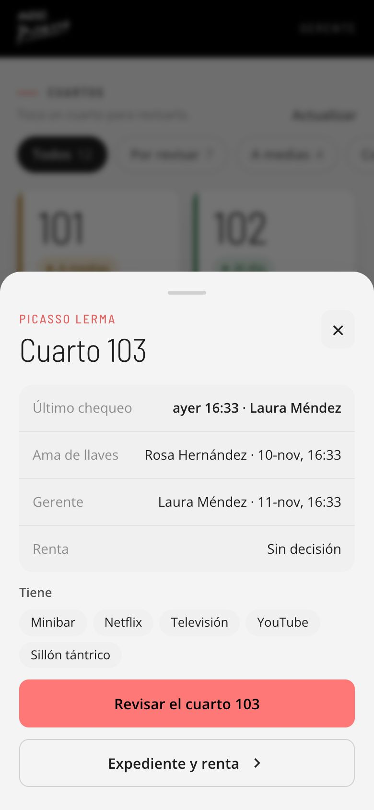
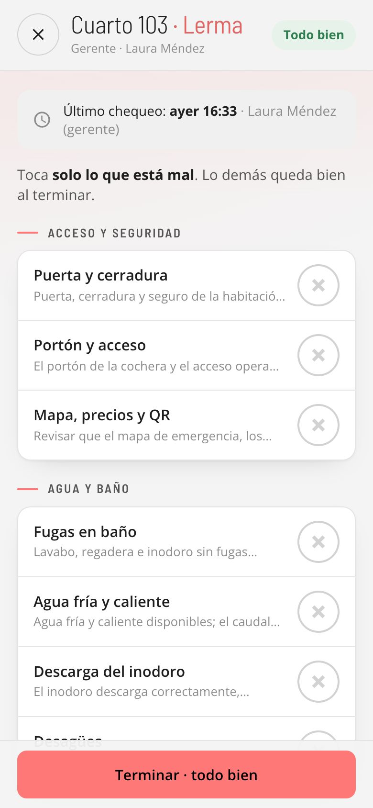
Marcar lo que está mal
- Toca el renglón que está mal. Se abre «¿qué está mal?» con lo que se revisa en ese punto.
- Escribe qué pasa, por ejemplo «Gotea la llave del lavabo». Es obligatorio: con eso empieza el folio.
- Toca Tomar foto: se abre la cámara. La foto se achica sola para que suba rápido aunque haya poca señal. Puedes tomar varias.
- Toca Está mal. El renglón queda con un tache rojo y arriba aparece «Folio PIC-LER-000009 abierto».
Si ese mismo punto de ese cuarto ya tenía un folio abierto, la falla se suma a ese folio en lugar de abrir otro.
¿Te equivocaste? Toca otra vez el renglón: cambia el texto y toca Guardar, o toca Quitar (fue un error). Si el folio todavía no se atendía, queda anulado.
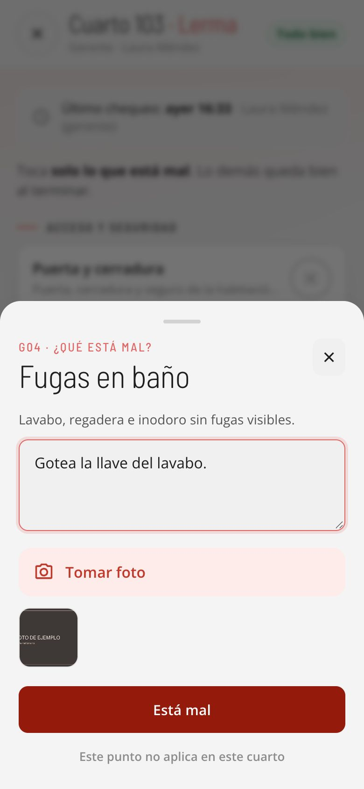
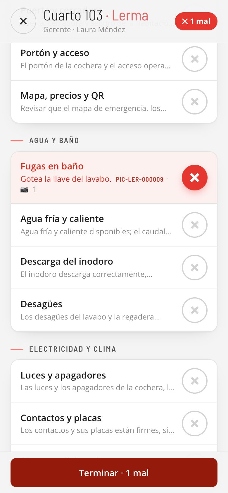
Terminar y decidir la renta
- Toca el botón de abajo, que dice cuántas cosas marcaste: Terminar · 1 mal. Si no marcaste nada, la app te pregunta «¿Todo bien con el cuarto?» antes de guardarlo.
- Todo lo que no tocaste queda bien y el chequeo se guarda con su hora. Después ya no se puede cambiar.
- En la pantalla final están las fallas con su folio. Responde «¿Este cuarto puede rentarse?»: Sí, puede o No rentar.
- Revisa el motivo (la app propone uno), elige el folio relacionado si no se renta, y toca Registrar decisión.
Desde ahí también bajas el PDF de esa revisión.
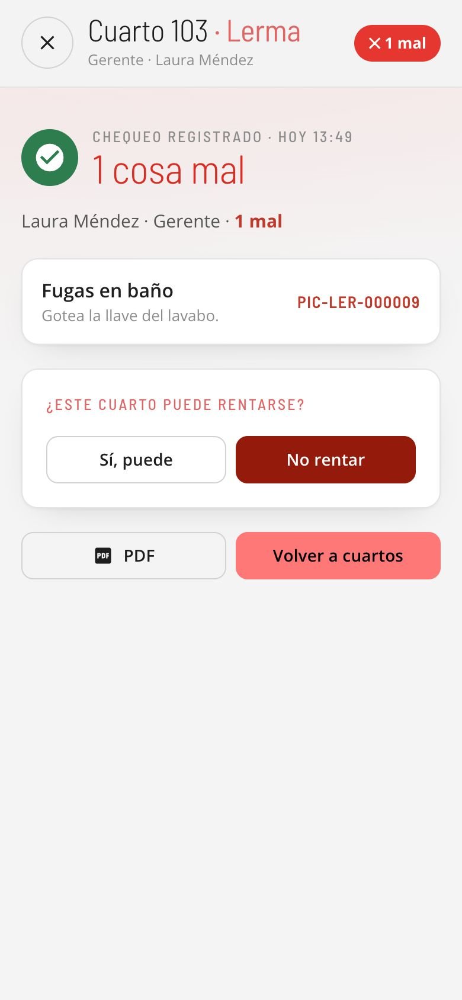
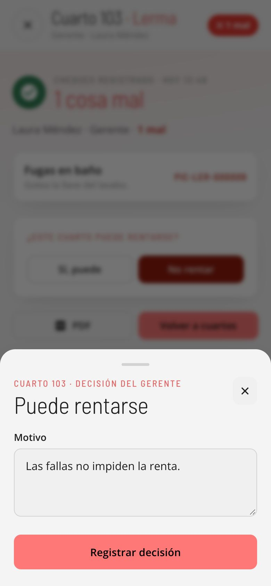
Si administración puso tu sucursal en «Marcar cada punto ✓ o ✗», cada renglón trae ✓ y ✗, y el botón dice «Faltan 12 por marcar» hasta que marques todos.
Dar seguimiento a un folio
- En Folios filtras por Abiertas, Reportadas, En atención, Cerradas o Todas, buscas por folio, problema o cuarto, y eliges la fecha.
- Abre el folio. Arriba, «Siguiente paso» te dice qué toca, y debajo ves los cinco pasos del seguimiento: detectar, decidir la renta, atender, verificar con foto y cerrar.
- Si no has decidido la renta, la app te lo pide primero.
- Toca Poner en atención y escribe quién lo atiende: mantenimiento, un plomero, un proveedor.
- En Dar seguimiento cambias la prioridad (alta, media o baja), anotas avances con Anotar avance y cambias la renta si hace falta.
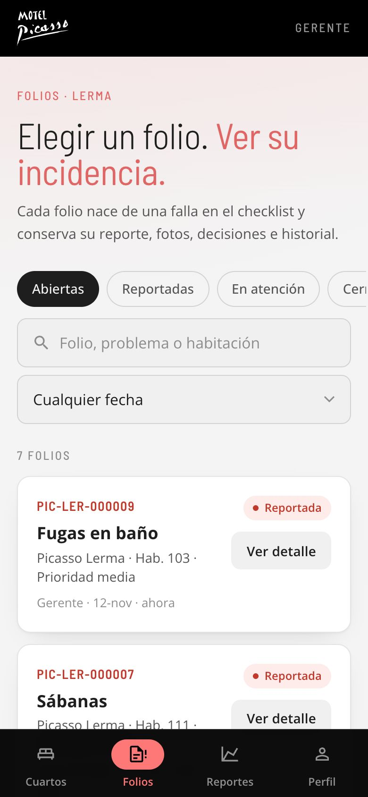
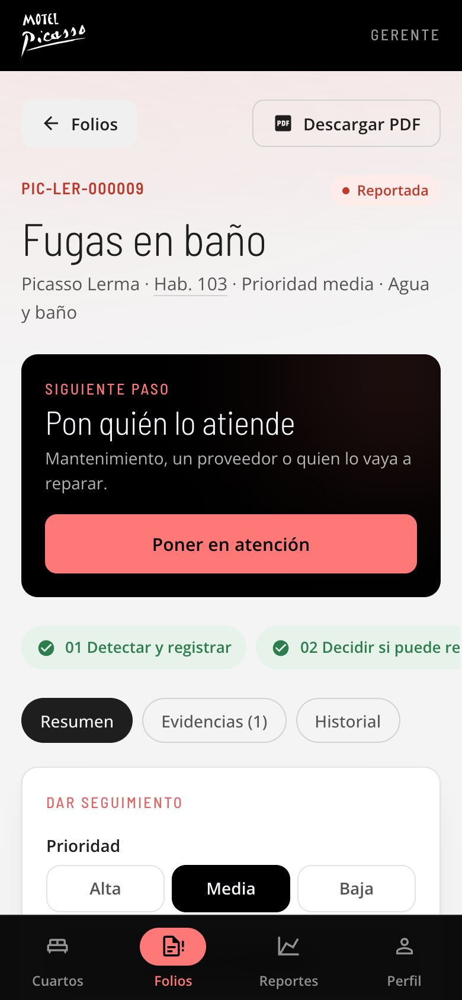
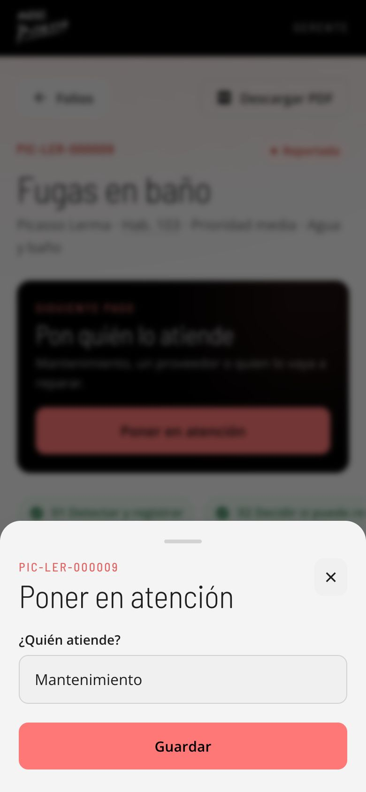
Cerrar un folio
- Cuando quede reparado, compruébalo tú y toca Tomar foto de reparación.
- Toca Actualizar y cerrar, escribe qué se corrigió y toca Cerrar folio.
- La app te pide confirmar la renta del cuarto: normalmente «Puede rentarse · Reparación verificada».
Sin foto de reparación del gerente y sin explicar la corrección, el folio no se cierra: el botón se queda apagado y debajo dice qué falta. Solo el gerente de la sucursal cierra folios. Si la reparación no quedó bien, no lo cierres: sigue abierto.
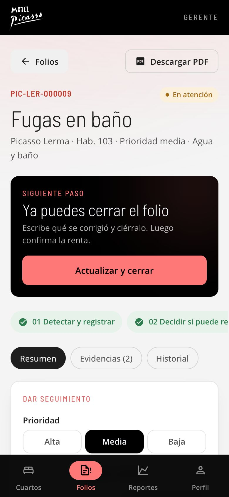
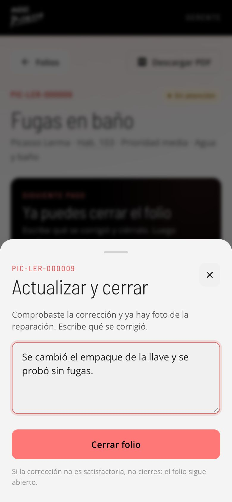
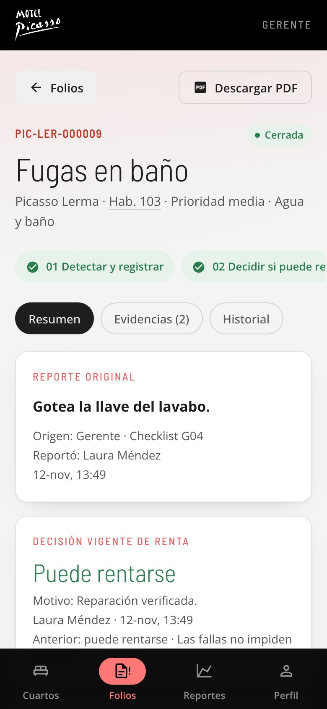
Historial y expediente del cuarto
- En el folio, Historial dice quién hizo qué y cuándo; Evidencias junta todas las fotos. Toca una foto para verla grande con quién la tomó.
- Descargar PDF baja el folio completo.
- Desde un cuarto, Expediente y renta muestra la decisión de renta vigente y las anteriores, los puntos pendientes, sus folios y todas sus revisiones. También tiene su PDF.
- En Reportes ves los indicadores de tu sucursal y bajas el PDF del periodo. Cómo se lee cada indicador está en la parte de Propietarios del manual completo.
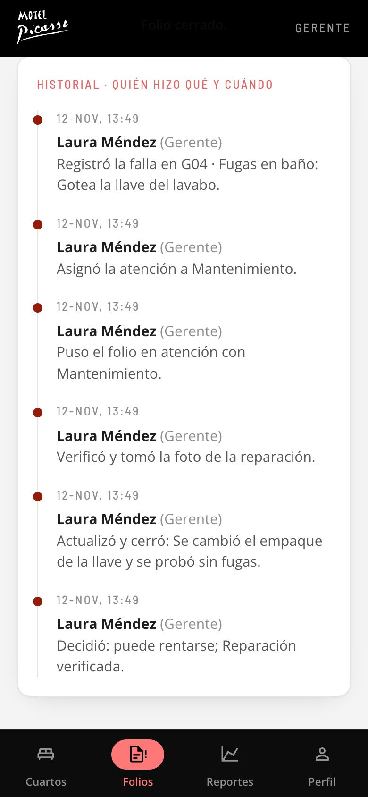
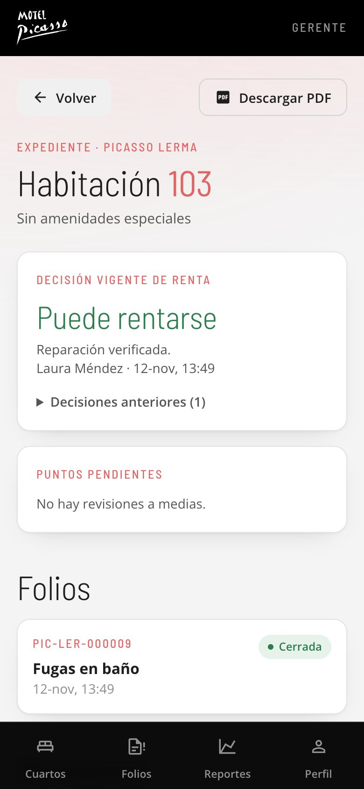
Ama de llaves
Tu checklist de limpieza
Cuando terminas de limpiar un cuarto, lo revisas en la app: tocas solo lo que está mal y lo envías al gerente.
Tu inicio
Arriba ves tu sucursal con tres números: cuartos a medias, folios abiertos y cuartos sin rentar.
«Tu siguiente paso» te recuerda si dejaste un cuarto a medias («Tienes el 111 a medias» → Seguir con el 111). Si no, te pregunta «¿Terminaste de limpiar un cuarto?».
Abajo están tus cuartos con su estado y la hora del último chequeo. Los filtros son Todos, A medias, Con folio y No rentar.
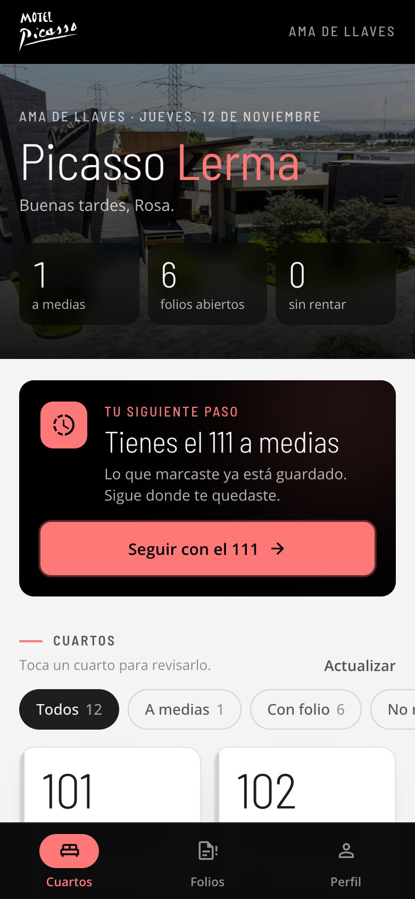
Revisar un cuarto
- Al terminar de limpiar, toca el cuarto y luego Revisar el cuarto 101.
- Arriba ves cuándo fue el último chequeo. Los 29 puntos van por grupos: cama y blancos, baño, habitación, amenidades, funcionamiento, cochera, áreas especiales y cierre, más el equipo del cuarto.
- Toca solo lo que está mal. Lo demás queda bien al terminar.
- Cada toque se guarda al momento. Si te interrumpen o cierras la app, el cuarto queda «a medias» y sigues donde te quedaste.
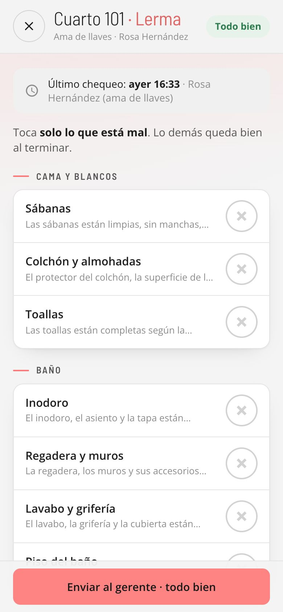
Cuando algo está mal
- Toca el renglón que está mal.
- Escribe qué pasa, por ejemplo «Falta una toalla de mano». Es obligatorio.
- Toca Tomar foto y toma la foto con la cámara.
- Toca Está mal. El renglón queda con tache rojo y se abre un folio para el gerente.
Si te equivocaste, toca otra vez el renglón y elige Quitar (fue un error).
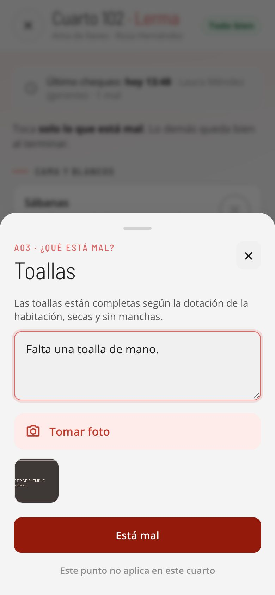
Si un punto no aplica
Lo que el cuarto no tiene (jacuzzi, alberca, sauna o terraza) la app ya lo quita sola. Si otro punto no se puede revisar en ese cuarto:
- Toca el punto.
- Abajo, toca «Este punto no aplica en este cuarto».
- Elige el motivo: No existe en esta habitación, La habitación estaba sucia o Fuera de servicio. O escribe otro y toca Guardar.
El punto queda tachado con su motivo.
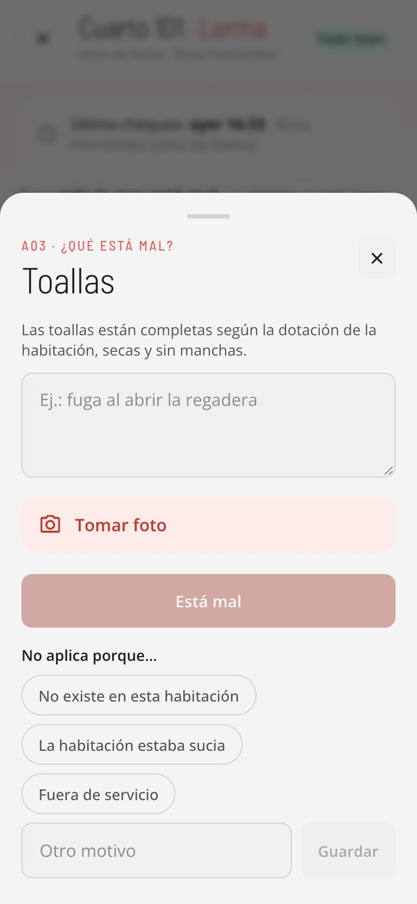
Enviar al gerente
- Toca el botón de abajo: Enviar al gerente · todo bien o Enviar al gerente · 1 mal.
- Si no marcaste nada, la app pregunta «¿Todo bien con el cuarto?». Toca Sí, todo está bien, o No, voy a revisar otra vez para regresar.
- Queda registrado con la hora. Ya está con el gerente: él decide si el cuarto puede rentarse.
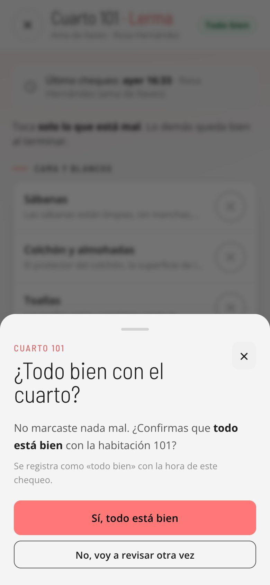
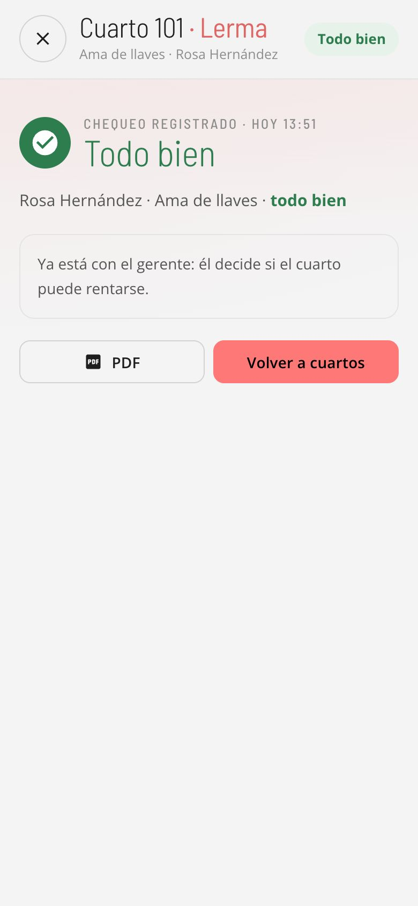
En Folios puedes consultar los folios de tu sucursal: su estado, sus fotos y su historial. Solo el gerente los actualiza y los cierra.
Propietarios
Las seis sucursales en una sola vista
El panel junta el avance de las revisiones, los folios abiertos y los cuartos que no se rentan. Todo es de consulta: nada de lo que toques cambia datos.
El panel
- Elige el periodo arriba: Hoy, Ayer y hoy, 7 días o 30 días. Debajo dice la hora del corte, en hora de CDMX.
- Revisiones completas: las hechas contra las que tocaban en el periodo, sumando gerente y ama de llaves, y cuántas faltan.
- Incidencias abiertas: folios sin cerrar, incluidos los que están en atención. Tócalo para ver la lista.
- Cuartos bloqueados: los que tienen decisión vigente de no rentarse.
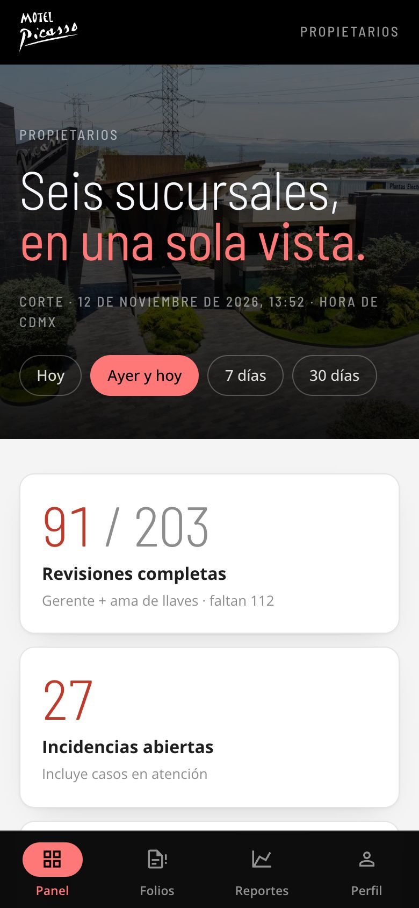
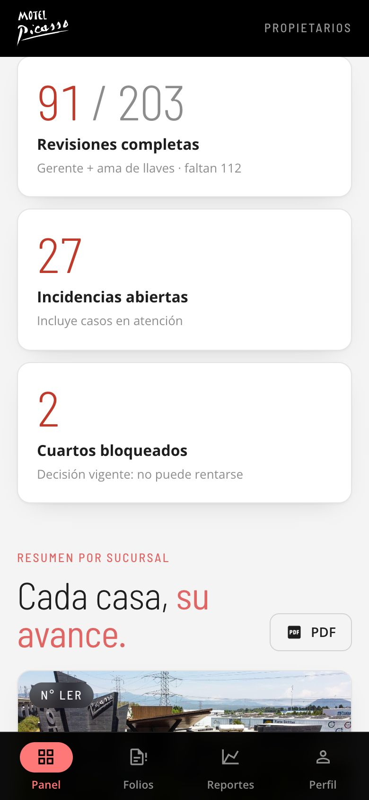
Cada sucursal
Cada tarjeta trae la foto de la sucursal, su clave y, si hay, cuántos cuartos están sin rentar. Debajo:
- Gerente y Ama de llaves: revisiones completas contra las que tocaban, con su barra.
- Los folios abiertos y la hora del último chequeo.
Toca la tarjeta para ver los folios abiertos de esa sucursal. El botón PDF baja el reporte del periodo.
«Completa» quiere decir que el checklist se terminó, no que salió sin fallas.
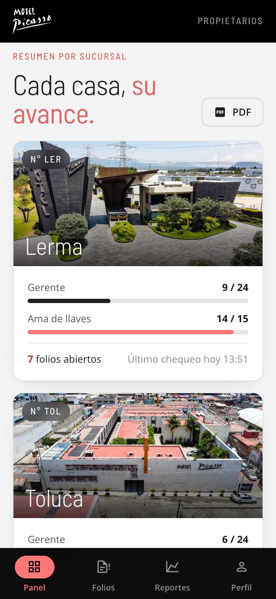
Folios de todas las sucursales
En Folios filtras por estado, buscas por folio, problema o cuarto, y eliges sucursal y fecha.
Cada folio abre su expediente completo: el reporte original con quién lo reportó, la decisión de renta, quién lo atiende, las fotos (la inicial y la de la reparación) y el historial. Lo puedes bajar en PDF.
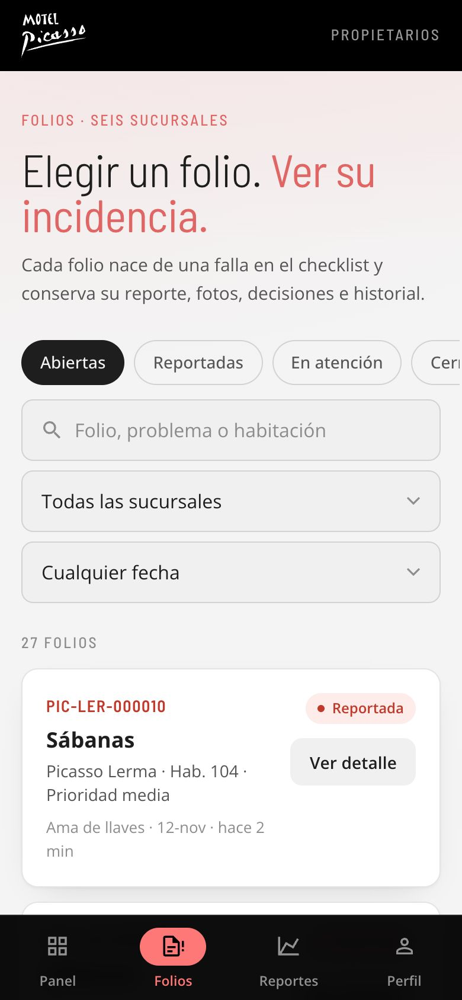
Reportes e indicadores
Elige el periodo (Hoy, 7, 30 o 90 días). Cada indicador dice cómo se calcula:
| Indicador | Cómo se lee |
|---|---|
| Cumplimiento de revisión | Revisiones completas entre las que tocaban, por puesto (gerente y ama). |
| Conformidad de puntos | Puntos bien entre puntos revisados (bien + falla). «No aplica» y «Sin revisar» no cuentan como aprobados. |
| Tiempo de solución | Lo que tardan en promedio los folios cerrados, y cuánto lleva el abierto más antiguo. |
| Reincidencia | Cuartos donde se repitió la misma categoría de falla dentro del periodo. |
Más abajo: la tabla por sucursal, las fallas frecuentes y las reincidencias (tócalas para abrir el expediente del cuarto).
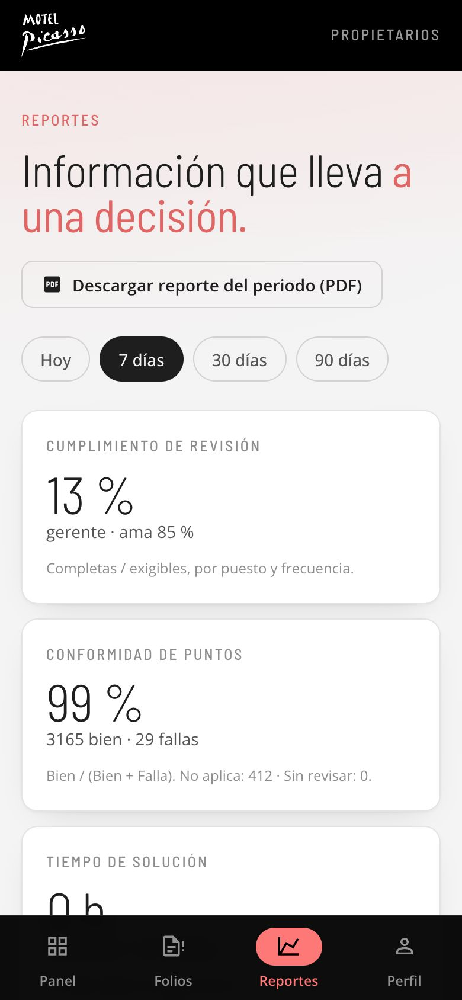
El reporte en PDF
En Reportes, Descargar reporte del periodo (PDF) baja el resumen de las seis sucursales con sus indicadores, listo para imprimir o mandar. Se genera al momento y necesita señal.
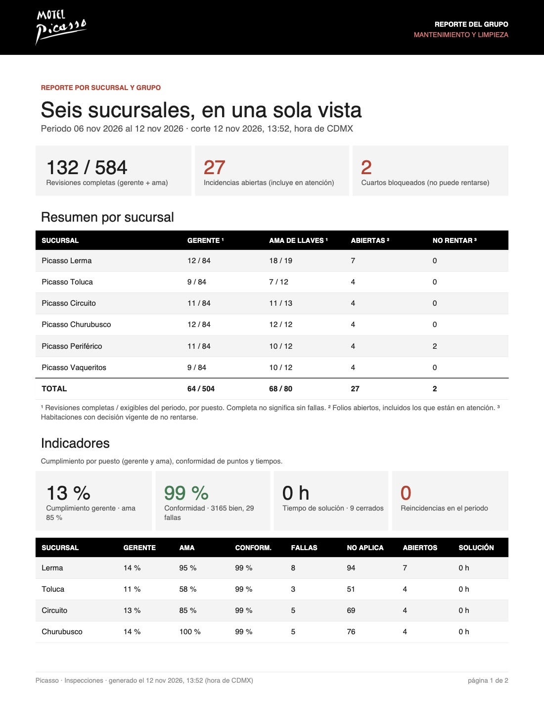
Administración
Cuartos, equipo y personal
Todo está en Ajustes, con tres pestañas: Cuartos, Catálogo de equipo y Personal. Casi todo se guarda en cuanto lo tocas; el equipo de un cuarto y las altas de personal llevan su botón para guardar.
Reglas de cada sucursal
En Cuartos, elige la sucursal arriba. Debajo están sus tres reglas:
| Regla | Opciones |
|---|---|
| Revisión del gerente | Diaria, cada dos días o cada tres días. |
| Exigibles de ama de llaves | Una por cada limpieza, o una por cuarto al día. |
| Checklist | Solo marcar lo que está mal, o marcar cada punto ✓ o ✗. |
Las dos primeras cambian cuántas revisiones «tocaban» en el panel y en los reportes. La tercera cambia cómo se ve el checklist en esa sucursal.
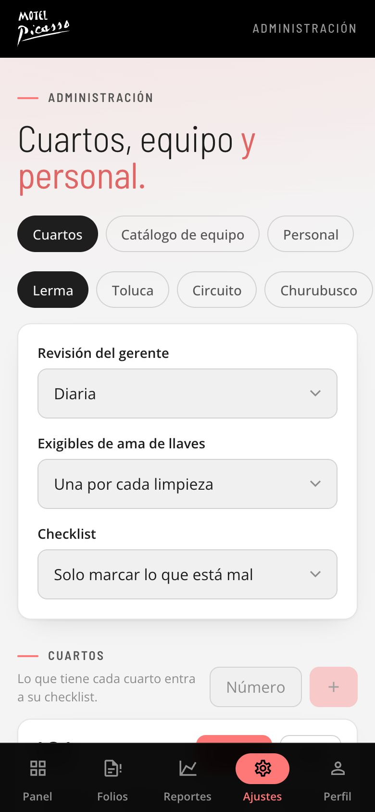
Cuartos
- Para dar de alta un cuarto, escribe su número junto a «Cuartos» y toca +.
- Marca sus áreas especiales: Jacuzzi, Alberca, Sauna o Terraza. Los puntos de esas áreas solo salen en los cuartos que las tienen.
- Baja saca un cuarto de servicio; Activar lo regresa. Su historial se conserva.
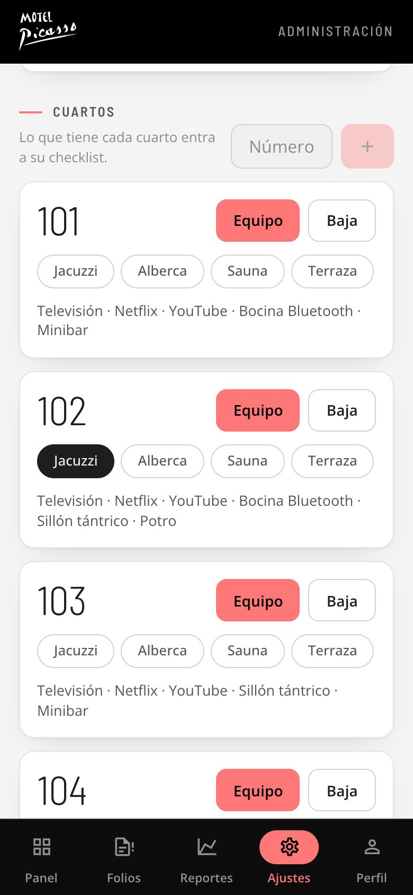
Equipo de cada cuarto
- Toca Equipo en el cuarto.
- Toca todo lo que tiene: bocina, Netflix, sillón tántrico, minibar… Lo elegido se pone en negro.
- Toca Guardar · 5 cosas.
Cada cosa sale en el checklist de ese cuarto, en «Equipo del cuarto», para gerente y ama de llaves.
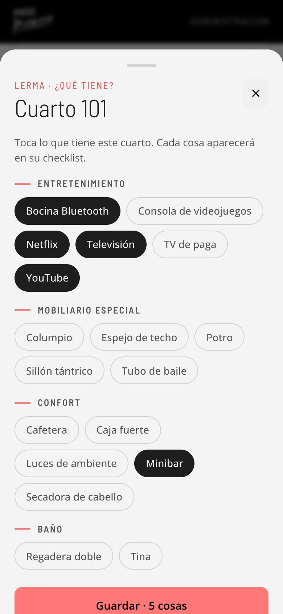
Catálogo de equipo
- Escribe el nombre de lo nuevo, elige su categoría (o «Otra categoría…») y toca Agregar.
- El lápiz cambia el nombre.
- Activo / Inactivo: lo inactivo deja de salir en los checklists nuevos. Lo que ya se revisó se conserva.
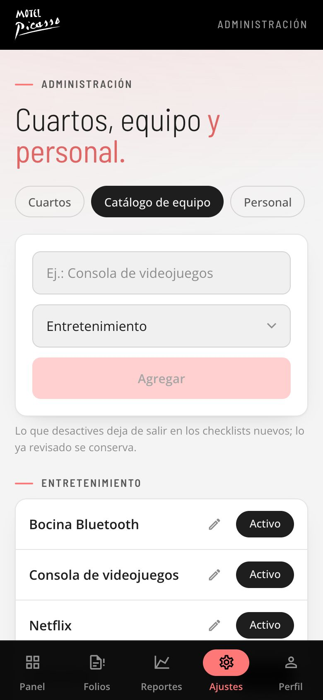
Personal
- En Personal ves a todos con su puesto y su sucursal.
- Toca Dar de alta: nombre completo, correo, una contraseña de al menos 10 caracteres, el puesto y, para gerente o ama de llaves, su sucursal.
- Toca Crear cuenta y entrega la contraseña en persona, no por mensaje.
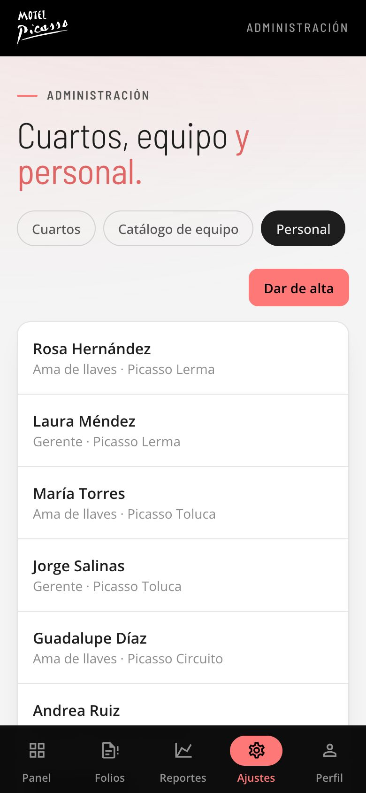
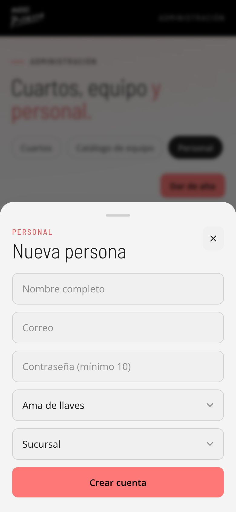
Sin señal
Si se va la señal
En los cuartos la señal falla. El checklist está hecho para seguir sin ella.
- Sigue marcando. Lo que tocas se guarda en el teléfono y abajo dice «1 sin subir por falta de señal; se suben solos».
- Cuando vuelve la señal, se sube solo. La app lo vuelve a intentar cada 20 segundos.
- No termines ni envíes hasta que se suba todo: la app no te deja y avisa «Hay cambios sin subir por falta de señal».
- Las fotos no esperan: sin señal no se guardan. La app avisa «Sin señal: toma la foto otra vez cuando haya conexión».
La app abre aunque no haya señal, pero las listas de cuartos, folios y reportes necesitan conexión para cargarse. Sin ella dice «Sin conexión. Revisa la señal e inténtalo otra vez».
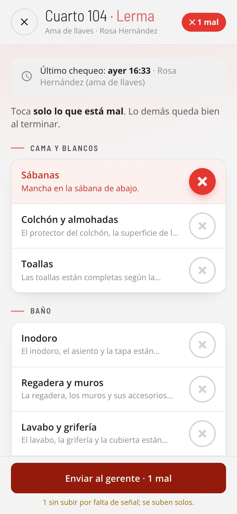
Ayuda
Preguntas frecuentes y problemas comunes
No me deja entrar
| Si dice… | Qué pasa y qué hacer |
|---|---|
| «El correo o la contraseña no son correctos.» | Revisa el correo (sin espacios) y usa Ver para revisar la contraseña. Después de 5 contraseñas equivocadas la cuenta se bloquea 15 minutos, y en ese tiempo sale este mismo mensaje aunque la escribas bien: espera los 15 minutos. Si sigue, pide a la administración que revise tu cuenta. |
| «Demasiados intentos. Espera unos minutos.» | Hubo muchos intentos seguidos desde la misma red o a la misma cuenta. Espera 5 minutos y vuelve a intentar. |
| «Sin conexión. Revisa la señal e inténtalo otra vez.» | No hay internet. Busca señal o conéctate al wifi. |
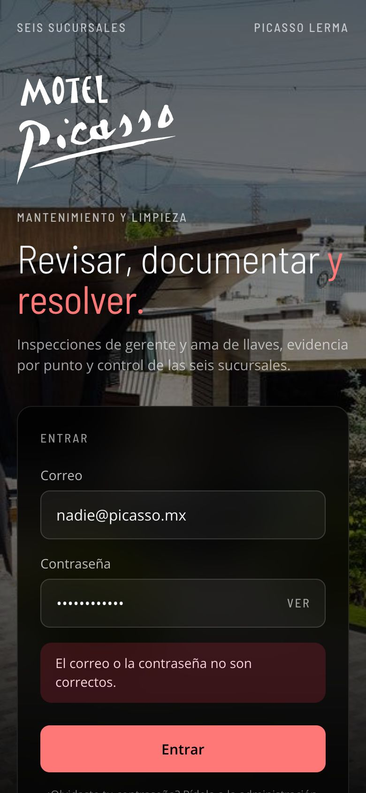
La foto no sube
| Si dice… | Qué pasa y qué hacer |
|---|---|
| «Sin señal: toma la foto otra vez cuando haya conexión.» | Las fotos necesitan señal. Acércate a donde haya y vuelve a tomarla. |
| «La foto pesa más de 8 MB.» | La app achica las fotos, pero algunos teléfonos guardan un formato que no puede achicar. Tómala otra vez; en iPhone puedes poner Ajustes → Cámara → Formatos → Más compatible. |
| «La evidencia debe ser una foto (JPG, PNG o WebP).» | Elegiste un archivo que no es foto, o una foto en un formato que no se acepta. Vuelve a tomarla con la cámara. |
| Se queda en «Subiendo foto…» | La señal es débil. Espera; si marca error, vuelve a tomarla. |
Otras preguntas
- ¿Se pierde lo que marqué si cierro la app o me llaman?
- No. Cada toque se guarda al momento. El cuarto queda «a medias» y al volver sigues donde te quedaste.
- ¿Puedo cambiar una revisión que ya terminé?
- No. Al terminar queda registrada con su hora y ya no se modifica. Si algo cambió, se hace una revisión nueva.
- ¿Por qué no se activa el botón de terminar?
- Si tu sucursal pide marcar cada punto, dice «Faltan 12 por marcar» hasta que marques todos. También se detiene si hay cambios sin subir por falta de señal.
- ¿Quién cierra un folio?
- Solo el gerente de la sucursal, con su foto de la reparación y la explicación de lo que se corrigió. Los demás lo consultan.
- ¿Por qué un cuarto dice «No rentar»?
- Porque la decisión vigente del gerente es que no puede rentarse. El motivo está en el expediente del cuarto y en su folio.
- No baja el PDF.
- Los PDF se generan al momento y necesitan señal. Si dice «No se pudo generar el reporte», inténtalo otra vez en un momento.
- Olvidé mi contraseña.
- Pídela a la administración. La app todavía no la recupera ni la cambia sola.
- ¿Puedo usar la app en la computadora?
- Sí. Se abre en el navegador con la misma dirección y se acomoda a la pantalla grande. Para tomar fotos conviene el celular.
¿Algo no funciona como dice este manual? Toma una captura de pantalla y avisa a la administración.
Manual de usuario · versión 0.1 · noviembre de 2026 · elaborado por CometaX Company para Motel Picasso.